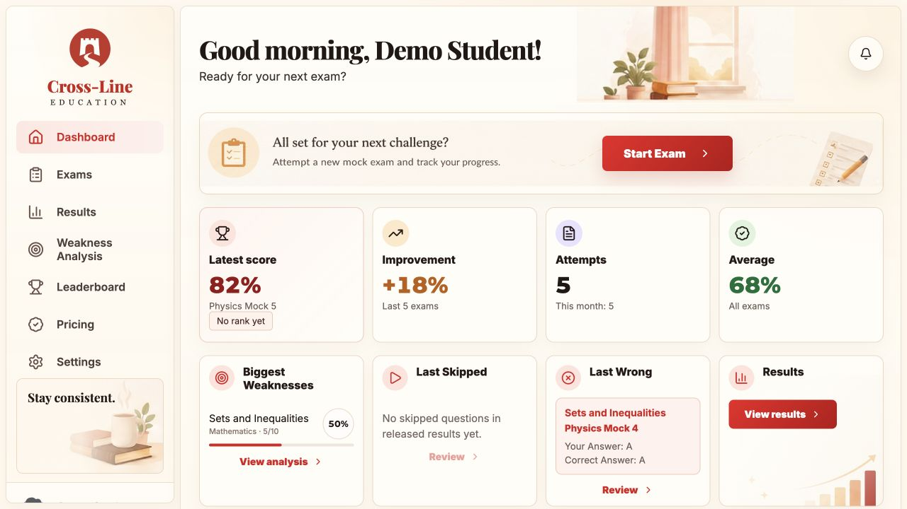
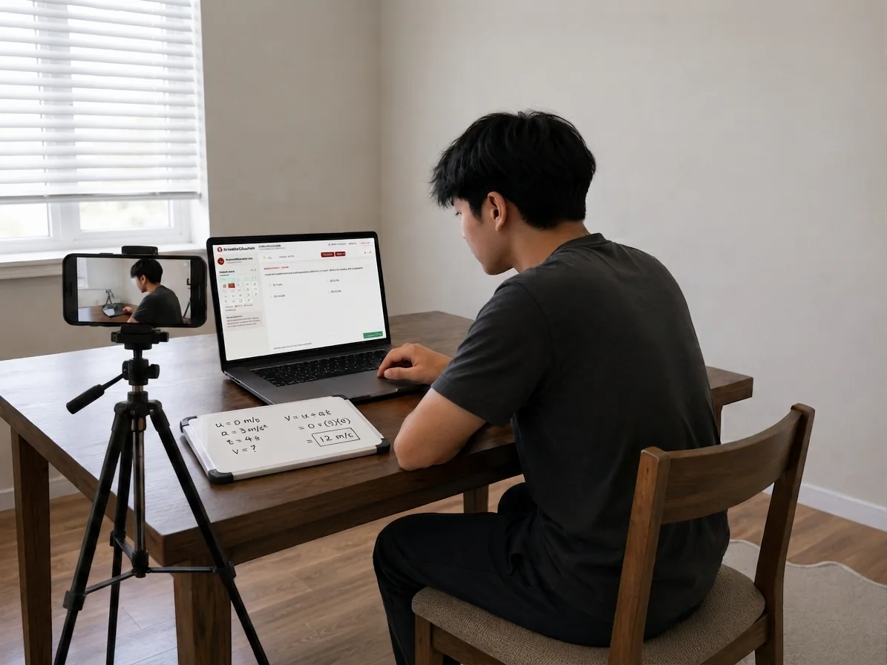
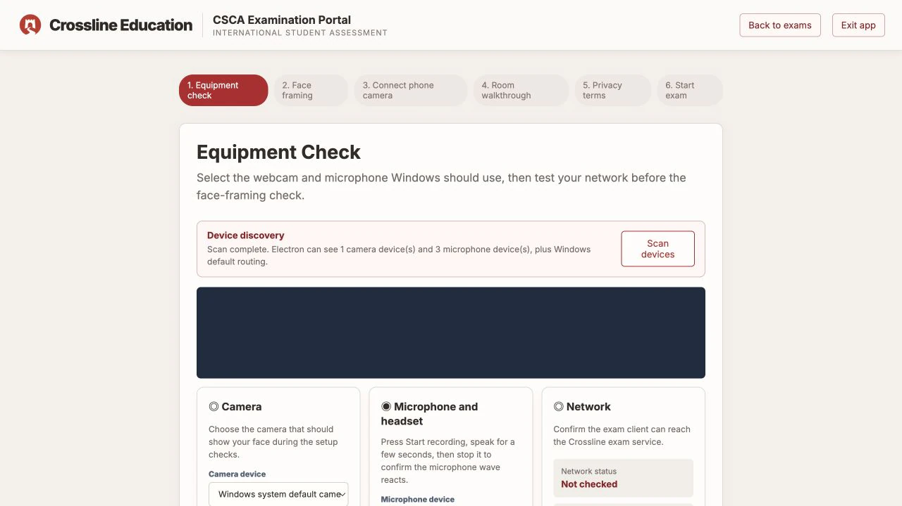
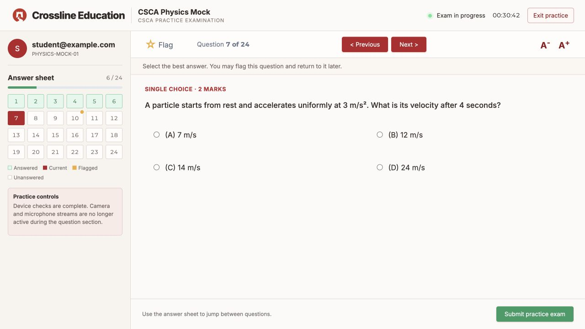
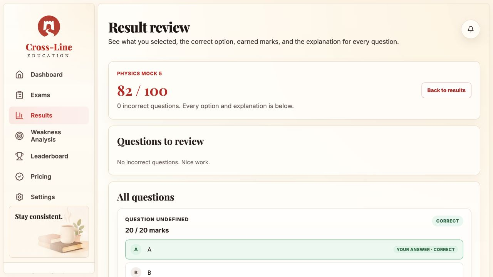
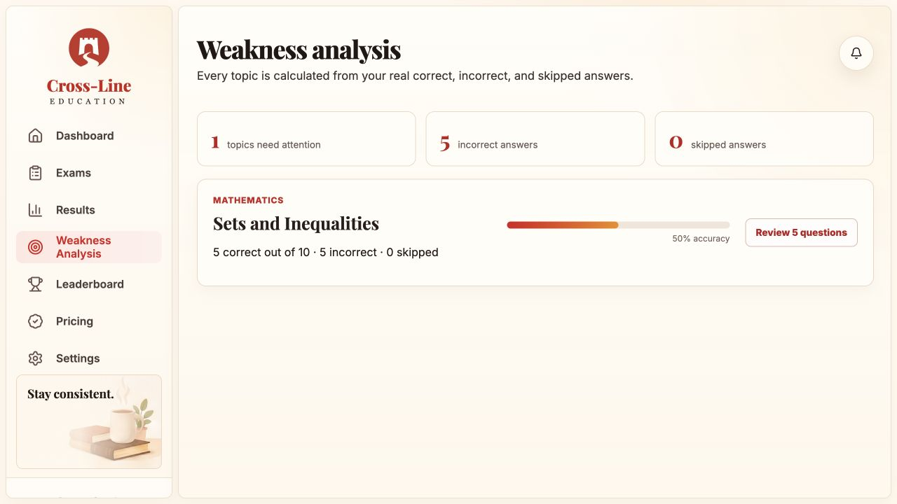

Physics
Mechanics, electricity, waves, optics, and modern physics — with diagrams and LaTeX.
Two-camera pre-exam setup, a 48-question timed interface, marks-based scoring, and a dashboard that shows exactly where you lose marks. This is the website — the exam runs in the Windows client.

Every mock starts with exam-day setup practice: desktop equipment checks, a face-framing guide, phone pairing, and a guided room walkthrough. The app does not identify faces or analyse rooms, and nothing is recorded.
The Windows client confirms that your selected webcam, microphone, and network connection are available.
Scan a QR code with your phone. A 6-character code connects the secondary camera in landscape.
Practice moving your phone around the room, then confirm the walkthrough is done. Video is not uploaded or analysed.
All streams are released before the first question. No webcam, mic, or phone recording runs during the exam.

One flow, designed to mirror exam day — then show you exactly what to study next.



Answer-sheet navigation with answered, current, and flagged states. A running clock, flag-for-review, previous/next, and text-zoom — the same flow students use inside the Windows client.

Scores are marks-based and available the moment you submit. Every question comes with the correct answer, your answer, and a written explanation. Weakness analysis turns that into topic-level study targets.
Mechanics, electricity, waves, optics, and modern physics — with diagrams and LaTeX.
Organic, inorganic, and physical chemistry problems with full explanations.
Calculus, algebra, geometry, and probability — fully equation-rendered.
Reading comprehension, grammar, and academic vocabulary drills.
Every plan unlocks all official CSCA past-paper mocks with full results. Higher tiers add Crossline original mocks. Prices are indicative for this prototype.
Every official CSCA past-paper simulated test, with full results and explanations.
All official past papers plus three Crossline original mock exams.
All official past papers plus five Crossline original mock exams.
All official past papers plus ten Crossline original mocks — the most practice.
Create your account on the website, then download the Windows client to take your first mock.